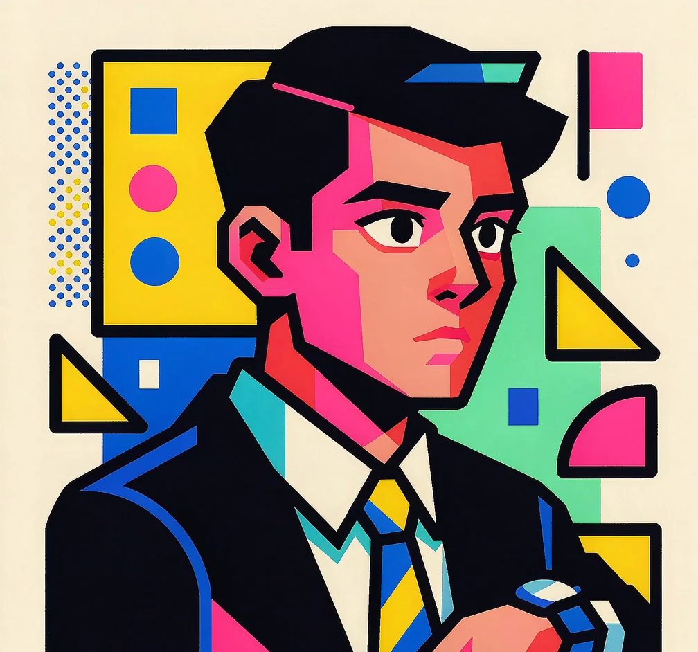

全栈工程师 · 现居广州
把代码写进生活，
把生活写成代码。
后端写 Java 与 Python，前端写 React 与 Vue。这里记录真实项目里拆过的服务、调过的慢查询，和事后想明白的事。

技术栈不是清单，是踩过的坑。
从 JVM 调优、缓存设计到消息队列与检索引擎 —— 每一层都在真实项目里跑过。
JavaPythonJVM
Spring BootSpring Cloud AlibabaMySQL
RedisRabbitMQElasticsearch
DockerVue3React
06个项目实战
20+项技术栈
02年工程实践
技术栈
给想合作的人看的一张清单 —— 下面这些，我都写过不止一遍。
主力语言
Java · Python · TypeScript
框架与生态
Spring Boot · Spring Cloud Alibaba · FastAPI · React · Vue3
数据与缓存
MySQL · PostgreSQL · Redis · Elasticsearch
消息与任务
RabbitMQ · Kafka · Xxl-Job · WebSocket
工程与交付
Docker · Nginx · Linux · Git · 微信小程序 · uni-app
技术笔记
写在 CSDN 上的一些整理 —— 都是项目里真遇到过的问题，点开就能读。